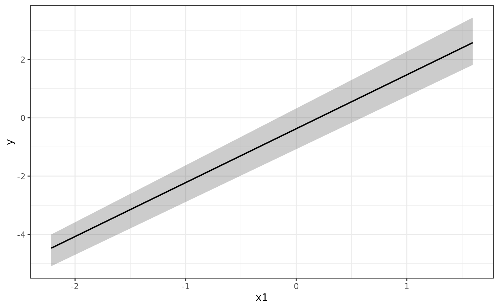

Flagship measurement-uncertainty-propagated prediction envelope plot
Source:R/plot.R
lb_plot_envelopes.RdProduces per-combination prediction ribbons over a focal predictor, with optional faceting, raw data overlay, and horizontal reference lines. This is the recommended visualization for communicating bootstrap results to an applied audience.
Usage
lb_plot_envelopes(
boot,
focal,
group = NULL,
facet = NULL,
data = NULL,
hlines = NULL,
hline_types = NULL,
xlim = NULL,
ylim = NULL,
n = 100L,
alpha_ribbon = 0.25,
label_x = NULL,
label_y = NULL,
interval = c("confidence", "prediction", "both"),
...
)Arguments
- boot
An
lb_bootobject.- focal
Name of the focal (x-axis) predictor (string). Passed to
lb_grid().- group
String column name to map to color, fill, and linetype aesthetics, or
NULL. Typically a grouping variable such as a replacement level.- facet
A
vars()expression for faceting (e.g.vars(Fineness, Alumina_Grade)), orNULLfor no faceting.- data
A data frame to overlay as raw data points, or
NULL. Must contain thefocalcolumn and the response variable.- hlines
Numeric vector of y-values for horizontal reference lines, or
NULL. The first value is drawn solid; subsequent values are dashed. Override withhline_types.- hline_types
Character vector of ggplot2 linetype values, one per element of
hlines. Default: first is"solid", rest are"dashed".- xlim
Length-2 numeric or
NULL. Passed toggplot2::coord_cartesian().- ylim
Length-2 numeric or
NULL. Passed toggplot2::coord_cartesian().- n
Number of grid points along the focal axis. Passed to
lb_grid(). Default100.- alpha_ribbon
Alpha for ribbon fill. Default
0.25.- label_x
X-axis label string, or
NULLto use the focal column name.- label_y
Y-axis label string, or
NULLto use the response variable name from the formula.- interval
One of
"confidence"(default),"prediction", or"both"."confidence"shows where the model's mean function lives under measurement-uncertainty perturbation."prediction"shows where a single new observation would land (confidence + residual scatter)."both"draws an outer prediction ribbon (low alpha) and an inner confidence ribbon (higher alpha) with the line on top.- ...
Additional arguments passed to
lb_grid()(e.g.clip_to_observed,at,extrapolate).
Details
The user adds domain-specific binning columns to the prediction grid (returned
by lb_grid()) and to the raw data before calling this function; the function
does not guess what binning makes sense. Aesthetic overrides and additional
ggplot2 layers can be added to the returned object with +.
Examples
# \donttest{
set.seed(1)
n <- 40
df <- data.frame(x1 = rnorm(n), x2 = rnorm(n), x3 = rnorm(n))
df$y <- 2 * df$x1 + rnorm(n)
spec <- suppressMessages(lb_spec(y ~ x1 + x2 + x3, data = df))
boot <- lb_bootstrap(spec, B = 5)
lb_plot_envelopes(boot, focal = "x1")

# }